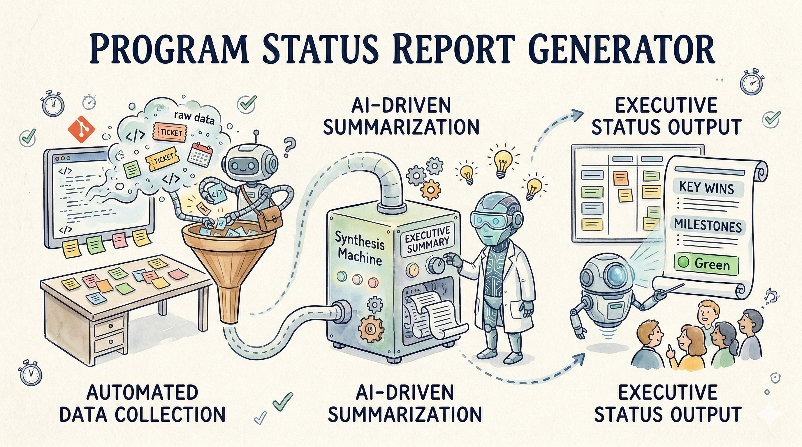

← Back to projects
Case 03 · AI Tool
·April 2026
·3 min read
Program Status Report Generator
Turns Jira exports and project charters into a goal-aligned executive status report. Templated where it can be, AI-narrated where it should be. Email-ready in seconds.

The Problem
- Jira dashboards show what happened in a sprint. They don't explain what it means for the program's charter goals. Executives ask "are we on track?" and the PM spends 2-3 hours stitching the answer from sprint data, charter docs, and meeting notes.
- The status report format drifts over time. Different PMs write different structures. Stakeholders struggle to compare across programs or find the same metric week over week.
- Blocked items and risk escalations get buried in ticket comments. They rarely surface in the status report unless someone specifically asks, and by then the escalation is late.
- Charter goals are written once and forgotten. Sprint metrics measure velocity, not whether that velocity is aimed at the right targets. Goal alignment is a judgment call, not a measured one.
The Approach
- Ingest Jira CSV exports (or any project management tool that exports CSV)
- Calculate velocity, completion rate, burndown, and blocked item metrics deterministically
- Score charter goals using label-based heuristics, GREEN / AMBER / RED, so goal alignment is measured, not guessed
- Retrieve relevant charter context via FAISS RAG, so the narrative ties back to original commitments
- Generate executive summary using local Ollama LLM, grounded in the charter language (template fallback if unavailable)
- Output a structured Markdown report: summary, goal scorecard, velocity trend, blocked items, risks with owners, and next steps
The Impact
- 2-3 hours → under a minute for weekly status report assembly
- Every claim ties back to a Jira metric or a charter goal. No hand-waving.
- Consistent format across programs: same structure, same metrics, comparable week-over-week
- Blocked items and risks surface automatically instead of waiting for someone to ask
- Email, Confluence, or steering committee ready out of the box
- 100% on-premise: 21 pytest tests, Python 3.12, runs offline
Stack
Python 3.12
LangChain
FAISS
Ollama
View on GitHub →